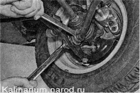
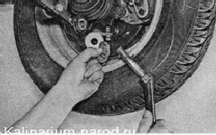

Продольная растяжка подвески снятие и установкаПри регулировке угла продольного наклона оси поворота в сервисном центре продольную растяжку будут снимать повторно, поэтому замену растяжки лучше проводить там же, одновременно с регулировкой. Для выполнения работы потребуется смотровая канава или эстакада. Снятие Совет Чтобы при установке старой продольной растяжки минимизировать нарушение регулировки угла продольного наклона оси поворота, подсчитайте и запишите количество регулировочных шайб, находящихся на заднем и переднем концах растяжки. 1. Снимаем кронштейн крепления растяжки. 2. Удерживая растяжку от проворачивания рожковым ключом на 24 мм, вторым ключом того же размера с длинным воротком отворачиваем гайку крепления переднего конца продольной растяжки к поперечному рычагу. 
3. Снимаем с растяжки упорную шайбу, извлекаем задний конец растяжки из резинометаллического шарнира поперечного рычага и снимаем с растяжки регулировочные шайбы. 
Установка Устанавливаем продольную растяжку в обратной последовательности. При установке регулировочной шайбы необходимо, чтобы фаска на ее внутренней кромке была обращена к растяжке. После замены продольной растяжки необходимо проверить углы установки передних колес в сервисном центре. |